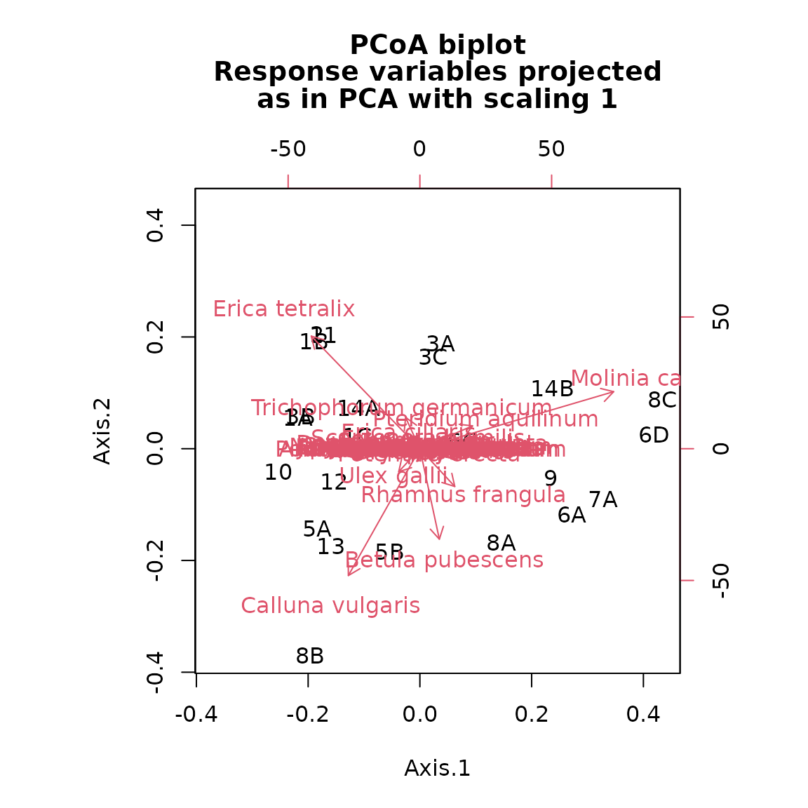
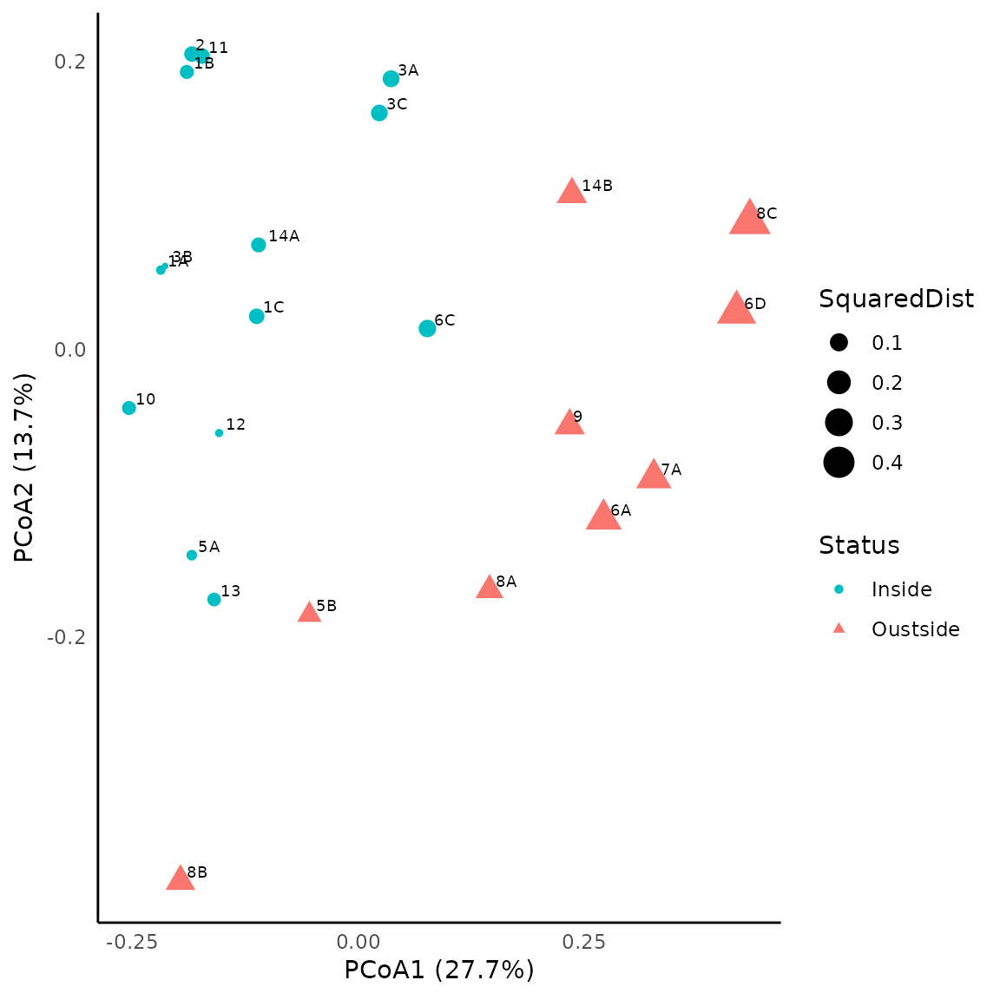
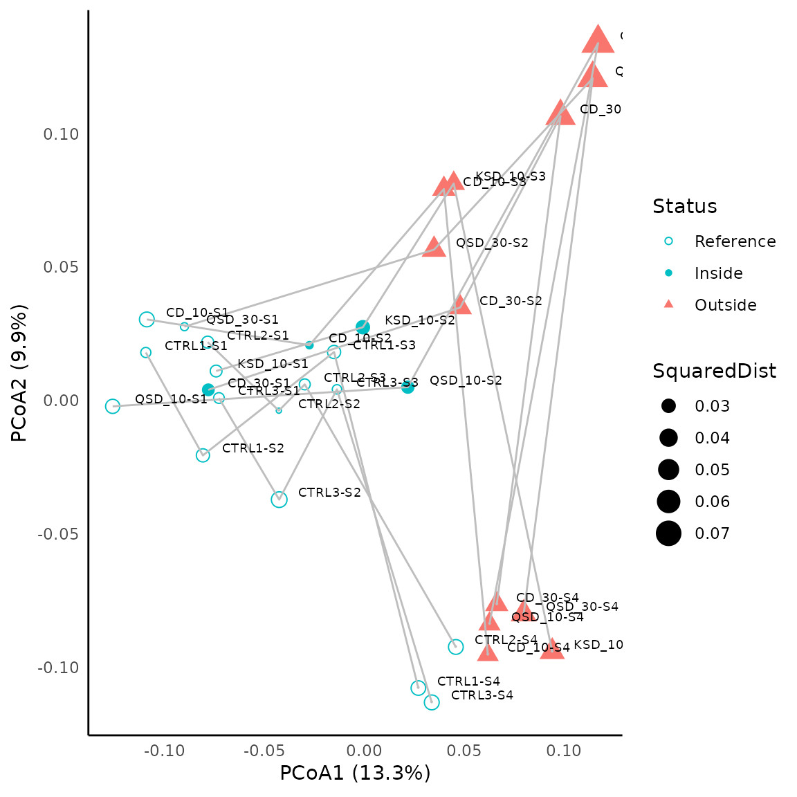
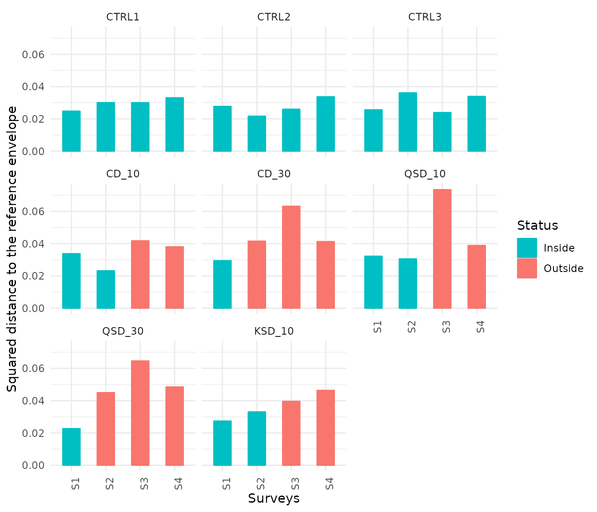
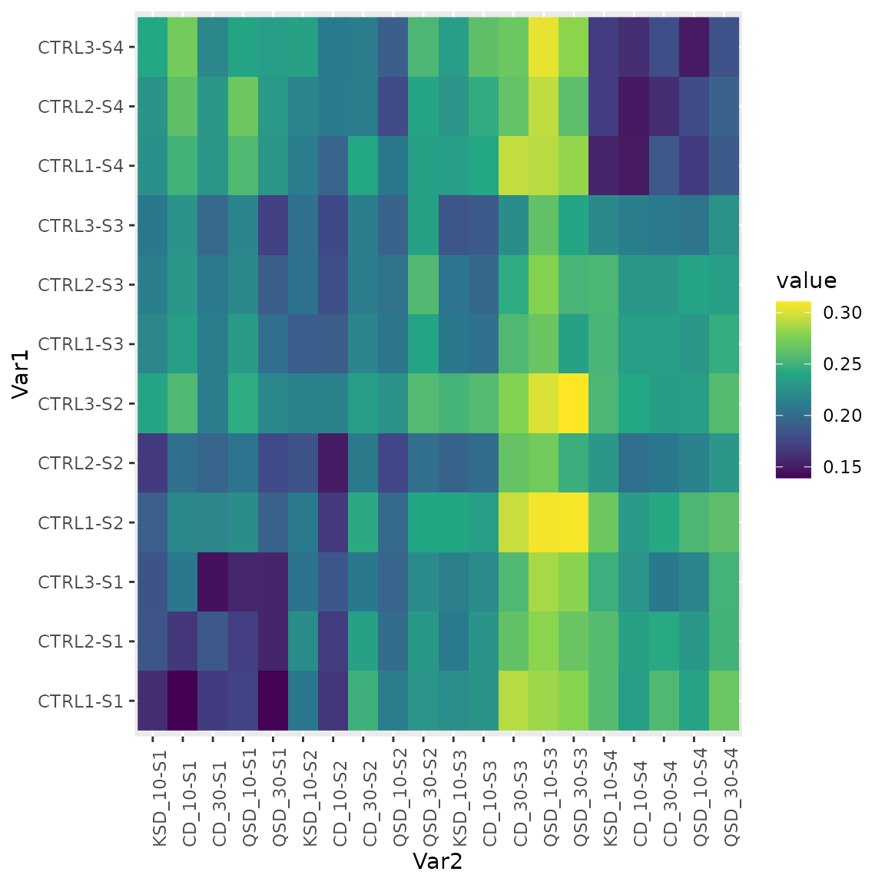
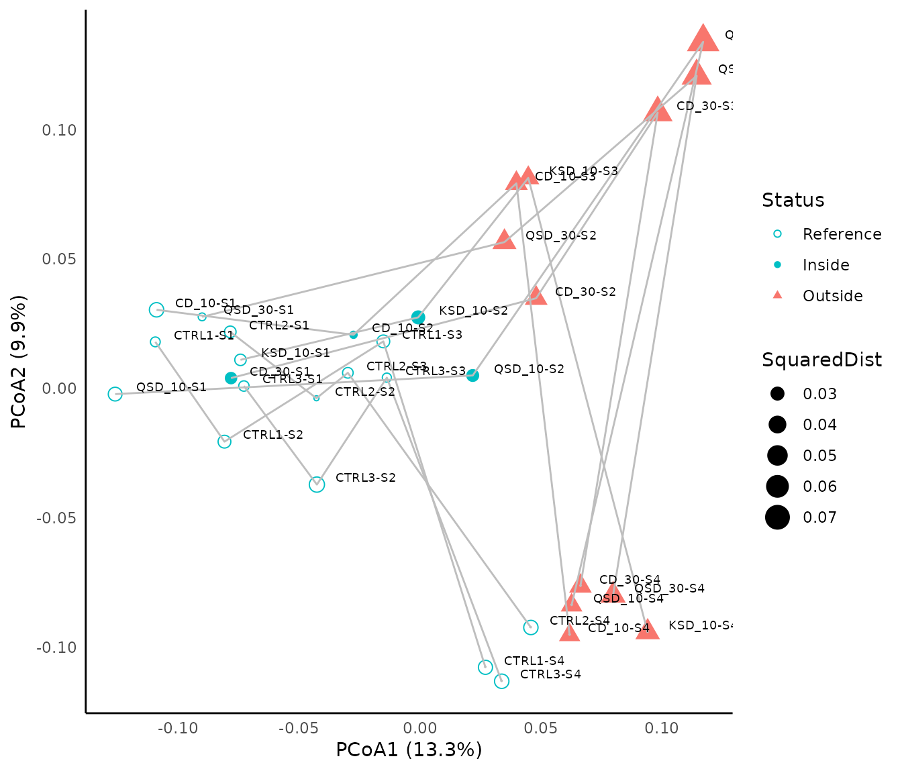

IntroductionEQA.RmdThis vignette present the ecological applications used by Sturbois at al. (under review) in the presentation of the Ecological Quality Assessment (EQA) framework. After the distance-matrix computation, the vignette focuses on Ecological Quality Assessement through state-based and trajectory-based variants, and on the representation of the results. Data sets used in this vignette have been included in the package for reproducibility.
First of all, we load required libraries, including
ecotraj:
## Loading required package: Rcpp## Loading required package: permute## Loading required package: lattice## This is vegan 2.6-4The nature reserve of Landes et Marais de Glomel (Brittany, France) is composed of temperate Atlantic wet heaths whose reference state is commonly considered dominated by plant communities associated to acid, nutrient poor soils that are at least seasonally water logged and dominated by Erica tetralix and E. ciliaris. This habitat is considered of community interest as part of the European directive on the conservation of natural habitats and of wild fauna and flora (97/62/CEE). For the definition of the reference envelope, surveys integrated the variability of reference states from youngest to early senescent stages, based on expert assessment with respect to the European Directive (97/62/CEE) requirements.
The data set consists of 23 rows (stations) and 46 columns (species). The percent cover values derived from Braun-Blanquet ordinal scale was estimated for 43 species of vascular plants. The first five stations (rows) were used to define the reference envelope, and the next 18 stations (rows) where those for which the conservation status was to be assessed.
## ID Ref Calluna vulgaris Erica ciliaris Erica tetralix Ulex gallii
## 2 1A TRUE 17.5 1 37.5 17.5
## 4 1B TRUE 5.0 0 37.5 5.0
## 6 1C TRUE 0.0 0 17.5 37.5
## 8 5A TRUE 37.5 0 17.5 5.0
## 10 13 TRUE 37.5 0 17.5 1.0
## 12 2 FALSE 5.0 0 37.5 5.0
## Molinia caerulea Betula pubescens
## 2 37.5 1.0
## 4 37.5 0.0
## 6 37.5 0.0
## 8 37.5 0.5
## 10 37.5 5.0
## 12 37.5 1.0We first create a compositional data matrix, by extracting species data from the initial data table:
glomel_comp <- as.matrix(glomel[,!(names(glomel) %in% c("ID", "Ref"))])
rownames(glomel_comp) <- glomel$ID
dim(glomel_comp)## [1] 23 43Using the compositional data, we can use function
vegdist() from package vegan to calculate
of Bray Curtis distances between ecosystem states:
glomel_bc <- vegan::vegdist(glomel_comp, method = "bray")Column Ref identifies stations considered as reference.
We define the state reference envelope using reference
station IDs as follows:
glomel_env <- glomel$ID[glomel$Ref]We are now ready to comparing the assessed stations with respect to the state reference envelope:
glomel_assess <- compareToStateEnvelope(glomel_bc, glomel_env, m=1.7, distances_to_envelope = TRUE)
head(glomel_assess)## Observation Envelope SquaredDist Q
## 1 1A TRUE 0.03790333 1.0000000
## 2 1B TRUE 0.07132734 0.8314306
## 3 1C TRUE 0.08877350 0.6846406
## 4 5A TRUE 0.04364347 1.0000000
## 5 13 TRUE 0.06748066 0.8701426
## 6 2 FALSE 0.08788512 0.6911247Function compareToStateEnvelope returns the squared
distance to the envelope centroid and values of Q statistic, between 0
and 1. We can transform those values into a qualitative assessement
using:
## Observation Envelope SquaredDist Q Status
## 1 1A TRUE 0.03790333 1.0000000 Inside
## 2 1B TRUE 0.07132734 0.8314306 Inside
## 3 1C TRUE 0.08877350 0.6846406 Inside
## 4 5A TRUE 0.04364347 1.0000000 Inside
## 5 13 TRUE 0.06748066 0.8701426 Inside
## 6 2 FALSE 0.08788512 0.6911247 InsideTo represent the results in a graphical way, we start by conducting a Principal Coordinates Analysis (PCoA) using package ape:
pcoa_glom<-ape::pcoa(glomel_bc)
pcoa_glom$values## Eigenvalues Relative_eig Rel_corr_eig Broken_stick Cum_corr_eig
## 1 1.0907447219 0.4766727479 0.276541696 0.173588510 0.2765417
## 2 0.4950912096 0.2163627131 0.137043169 0.125969462 0.4135849
## 3 0.3642463153 0.1591814185 0.106400069 0.102159938 0.5199849
## 4 0.2044040494 0.0893278124 0.068965956 0.086286922 0.5889509
## 5 0.1088336918 0.0475620499 0.046583944 0.074382161 0.6355348
## 6 0.0909295977 0.0397376768 0.042390911 0.064858351 0.6779257
## 7 0.0823902454 0.0360058444 0.040391045 0.056921843 0.7183168
## 8 0.0674316703 0.0294687097 0.036887836 0.050119122 0.7552046
## 9 0.0431497917 0.0188571435 0.031201163 0.044166741 0.7864058
## 10 0.0199475323 0.0087173881 0.025767331 0.038875736 0.8121731
## 11 0.0165915676 0.0072507783 0.024981384 0.034113831 0.8371545
## 12 0.0037733878 0.0016490304 0.021979443 0.029784827 0.8591339
## 13 0.0007698997 0.0003364584 0.021276043 0.025816573 0.8804100
## 14 0.0000000000 0.0000000000 0.020236829 0.022153569 0.9006468
## 15 -0.0036675061 -0.0016027583 0.018923860 0.018752208 0.9195707
## 16 -0.0092738342 -0.0040528127 0.018590076 0.015577605 0.9381608
## 17 -0.0106990830 -0.0046756690 0.017810544 0.012601415 0.9559713
## 18 -0.0140276518 -0.0061303064 0.015552499 0.009800294 0.9715238
## 19 -0.0236694197 -0.0103439119 0.011978377 0.007154792 0.9835022
## 20 -0.0389307903 -0.0170133730 0.009707504 0.004648526 0.9932097
## 21 -0.0486273339 -0.0212509164 0.006790319 0.002267574 1.0000000
## 22 -0.0610836015 -0.0266945029 0.000000000 0.000000000 1.0000000
## 23 -0.0900780126 -0.0393655206 0.000000000 0.000000000 1.0000000
## Cumul_br_stick
## 1 0.1735885
## 2 0.2995580
## 3 0.4017179
## 4 0.4880048
## 5 0.5623870
## 6 0.6272453
## 7 0.6841672
## 8 0.7342863
## 9 0.7784531
## 10 0.8173288
## 11 0.8514426
## 12 0.8812274
## 13 0.9070440
## 14 0.9291976
## 15 0.9479498
## 16 0.9635274
## 17 0.9761288
## 18 0.9859291
## 19 0.9930839
## 20 0.9977324
## 21 1.0000000
## 22 1.0000000
## 23 1.0000000We can use function biplot() from package
ape to show the ordination of stations with the species
projected as arrows:
biplot(pcoa_glom, glomel_comp)
Get coordinates of stations in the two first dimensions of the PCoA and copy them into the assessment data frame:
PCOA_DIM1_2 <- pcoa_glom[["vectors"]][,1:2]
glomel_assess$Dim1<-PCOA_DIM1_2[,1]
glomel_assess$Dim2<-PCOA_DIM1_2[,2]
head(glomel_assess)## Observation Envelope SquaredDist Q Status Dim1 Dim2
## 1 1A TRUE 0.03790333 1.0000000 Inside -0.2185262 0.05500827
## 2 1B TRUE 0.07132734 0.8314306 Inside -0.1897143 0.19276850
## 3 1C TRUE 0.08877350 0.6846406 Inside -0.1123913 0.02290741
## 4 5A TRUE 0.04364347 1.0000000 Inside -0.1842064 -0.14315651
## 5 13 TRUE 0.06748066 0.8701426 Inside -0.1594965 -0.17397305
## 6 2 FALSE 0.08788512 0.6911247 Inside -0.1840068 0.20520893We will use package ggplot to achieve a nicer representation of the assessment. Colors are used to illustrate stations that achieve conservation objectives (green) from those that not achieve them (red). The size of dot illustrate the squared distance to the centroid of the state reference envelope:
p<-ggplot(glomel_assess,
mapping=aes(x=Dim1,y=Dim2,size=SquaredDist, color=Status, shape=Status))+
geom_point()+
scale_colour_manual(values=c("#00BFC4", "#F8766D"))+
geom_text(glomel_assess,
mapping=aes(x=Dim1,y=Dim2,label=Observation),
hjust=-0.3, vjust=-0.3,size=2.5, color="Black")+
xlab(expression("PCoA1 (27.7%)"))+
ylab(expression("PCoA2 (13.7%)"))
p<-p + theme_minimal()+
theme(
# Hide some graphical elements
panel.border = element_blank(),
panel.grid.major = element_blank(),
panel.grid.minor = element_blank(),
axis.line = element_line(colour = "black"))
p
We used an experimental data set built by Tauran et al. (2020) to study the impact of fishing dredges and varying fishing pressures on maerl beds, in the bay of Brest (Brittany, France). The study follows a Before-After-Control-Impact design (Stewart-Oaten et al., 1986). Briefly, three control stations were surveyed and compared to five treatment stations characterised by different fishing dredges and pressure levels (Tauran et al., 2020): (1) a clam dredge (CD), 70 to 90 kg, 1.5 m wide, 40 teeth of 11 cm each; (2) a queen scallop dredge (QSD), 120 kg,1.8 m wide, with a blade; and (3) a king scallop dredge (KSD), 190 kg, 1.8 m wide, 18 teeth of 10 cm each every 9 cm. Pressure levels were measured as the number of dredge tows performed on the zone during the experimental dredging session: 0 (i.e. control), 10, or 30 dredge tows. Samples were collected from April 2016 to April2017. Session 1 was sampled just before the experimental dredging (t0); session 2 at t0 + 1 week; session 3 at t0 + 1 month and session 4 at t0 + 12 months. Nine replicates were sampled for all treatments and sessions with a Smith-McIntyre grab (0.1m2).
Abundance were pooled at the treatment levels (i.e. CTRL1, CTRL2, CTRL3, KSD_10, CD_10, CD_30, QSD_10 and QSD_30; Appendix_D) and log-transformed as initially performed in Tauran et al. (2020). A Bray-Curtis matrix of dissimilarity was computed with the resulting data set including raw data for 250 species at 32 observations (i.e. treatments*surveys) and used for both state- and trajectory-based EQAs.
## Abundance.Abludomelita gladiosa Abundance.Abra alba
## CD_10-S1 60 15
## CD_10-S2 54 14
## CD_10-S3 42 15
## CD_10-S4 45 8
## CD_30-S1 58 18
## CD_30-S2 39 19
## Abundance.Acanthochitona fascicularis Abundance.Achelia hispida
## CD_10-S1 2 0
## CD_10-S2 1 0
## CD_10-S3 0 0
## CD_10-S4 0 0
## CD_30-S1 4 0
## CD_30-S2 3 0
## Abundance.Alcyonidium diaphanum Abundance.Alentia gelatinosa
## CD_10-S1 0 1
## CD_10-S2 0 0
## CD_10-S3 0 0
## CD_10-S4 0 0
## CD_30-S1 0 0
## CD_30-S2 0 0
#Definition of the state reference envelope
grab_env <- ID[c(1,9:20,21,25,29)]
#Comparing assessed stations with respect to the state reference envelope
grab_assess <- compareToStateEnvelope(grab_bc, grab_env, m=1.5, distances_to_envelope = TRUE)
grab_assess$Status<-c(ifelse(grab_assess$Q>=0.5,"Inside", "Outside"))
grab_assess$Status[c(1,9:20,21,25,29)]<-"Reference"
grab_assess$Status<- factor(grab_assess$Status, levels = c("Reference","Inside","Outside"))
head(grab_assess)## Observation Envelope SquaredDist Q Status
## 1 CD_10-S1 TRUE 0.03374086 0.5587631 Reference
## 2 CD_10-S2 FALSE 0.02316547 0.9025909 Inside
## 3 CD_10-S3 FALSE 0.04174879 0.4041249 Outside
## 4 CD_10-S4 FALSE 0.03802341 0.4677650 Outside
## 5 CD_30-S1 FALSE 0.02940983 0.6757536 Inside
## 6 CD_30-S2 FALSE 0.04151217 0.4078031 OutsidePrincipal Coordinates Analysis
pcoa<-pcoa(grab_bc)
pcoa$values## Eigenvalues Relative_eig Rel_corr_eig Broken_stick Cum_corr_eig
## 1 1.584634e-01 2.060195e-01 0.197171182 0.133166238 0.1971712
## 2 1.374695e-01 1.787252e-01 0.171266731 0.099832904 0.3684379
## 3 6.259826e-02 8.138450e-02 0.078882864 0.083166238 0.4473208
## 4 4.859474e-02 6.317841e-02 0.061603876 0.072055127 0.5089247
## 5 4.309304e-02 5.602560e-02 0.054815305 0.063721793 0.5637400
## 6 3.274431e-02 4.257114e-02 0.042045974 0.057055127 0.6057859
## 7 3.056802e-02 3.974173e-02 0.039360645 0.051499571 0.6451466
## 8 2.569970e-02 3.341239e-02 0.033353610 0.046737666 0.6785002
## 9 2.440637e-02 3.173091e-02 0.031757754 0.042571000 0.7102579
## 10 2.252937e-02 2.929061e-02 0.029441721 0.038867296 0.7396997
## 11 2.122775e-02 2.759837e-02 0.027835652 0.035533963 0.7675353
## 12 1.826438e-02 2.374567e-02 0.024179137 0.032503660 0.7917145
## 13 1.722256e-02 2.239119e-02 0.022893631 0.029725882 0.8146081
## 14 1.564782e-02 2.034386e-02 0.020950557 0.027161779 0.8355586
## 15 1.497645e-02 1.947100e-02 0.020122148 0.024780827 0.8556808
## 16 1.426593e-02 1.854725e-02 0.019245438 0.022558605 0.8749262
## 17 1.263429e-02 1.642594e-02 0.017232149 0.020475271 0.8921584
## 18 1.096257e-02 1.425252e-02 0.015169409 0.018514487 0.9073278
## 19 1.034585e-02 1.345073e-02 0.014408441 0.016662635 0.9217362
## 20 8.768391e-03 1.139986e-02 0.012462005 0.014908249 0.9341982
## 21 7.930174e-03 1.031008e-02 0.011427726 0.013241582 0.9456260
## 22 7.103551e-03 9.235384e-03 0.010407753 0.011654281 0.9560337
## 23 6.381022e-03 8.296017e-03 0.009516222 0.010139129 0.9655499
## 24 4.537929e-03 5.899797e-03 0.007242023 0.008689854 0.9727920
## 25 4.165656e-03 5.415803e-03 0.006782675 0.007300965 0.9795746
## 26 3.285551e-03 4.271571e-03 0.005696710 0.005967632 0.9852713
## 27 2.572377e-03 3.344367e-03 0.004816721 0.004685580 0.9900881
## 28 2.287331e-03 2.973778e-03 0.004465003 0.003451013 0.9945531
## 29 1.695384e-03 2.204182e-03 0.003734597 0.002260536 0.9982877
## 30 5.647372e-05 7.342194e-05 0.001712340 0.001111111 1.0000000
## 31 0.000000e+00 0.000000e+00 0.000000000 0.000000000 1.0000000
## 32 -1.331269e-03 -1.730793e-03 0.000000000 0.000000000 1.0000000
## Cumul_br_stick
## 1 0.1331662
## 2 0.2329991
## 3 0.3161654
## 4 0.3882205
## 5 0.4519423
## 6 0.5089974
## 7 0.5604970
## 8 0.6072347
## 9 0.6498057
## 10 0.6886730
## 11 0.7242069
## 12 0.7567106
## 13 0.7864365
## 14 0.8135982
## 15 0.8383791
## 16 0.8609377
## 17 0.8814129
## 18 0.8999274
## 19 0.9165901
## 20 0.9314983
## 21 0.9447399
## 22 0.9563942
## 23 0.9665333
## 24 0.9752232
## 25 0.9825241
## 26 0.9884918
## 27 0.9931773
## 28 0.9966284
## 29 0.9988889
## 30 1.0000000
## 31 1.0000000
## 32 1.0000000Representing the results of Glenan state-based EQSA trough in the two first PCoA dimensions
#Get coordinates of stations in the two first dimensions of the PCoA
PCOA_DIM1_2<-pcoa[["vectors"]][,1:2]
grab_assess$Dim1<-PCOA_DIM1_2[,1]
grab_assess$Dim2<-PCOA_DIM1_2[,2]
#Information about Treatment and Surveys
grab_assess$Treatment<-Treatment
grab_assess$Surveys<-Surveys
p<-ggplot(grab_assess, aes(x=Dim1, y=Dim2, group=Status)) +
geom_point(aes(shape=Status, color=Status, size=SquaredDist))+
scale_shape_manual(values=c(1, 16, 17))+
scale_color_manual(values=c("#00BFC4", "#00BFC4", "#F8766D"))+
geom_path(aes(x=Dim1,y=Dim2,group=Treatment),color="grey", arrow = arrow(length = unit(0.03, "cm")))+
geom_text(grab_assess,mapping=aes(x=Dim1,y=Dim2,label=ID),hjust=-0.3, vjust=-0.3,size=2.5, color="Black")+
xlab(expression("PCoA1 (13.3%)"))+
ylab(expression("PCoA2 (9.9%)"))
p<-p+ theme_minimal()+
theme(
# Hide some graphical elements
panel.border = element_blank(),
panel.grid.major = element_blank(),
panel.grid.minor = element_blank(),
axis.line = element_line(colour = "black"))
p
Creating a bar plot showing the evolution of the squared distance to the centroid of the state reference envelope during the study period for each treatment
grab_assess$Treatment<-factor(grab_assess$Treatment,c("CTRL1","CTRL2","CTRL3",
"CD_10","CD_30",
"QSD_10","QSD_30",
"KSD_10"))
grab_assess$Status<-c(ifelse(grab_assess$Q>=0.5,"Inside", "Outside"))
grab_assess$Status<- factor(grab_assess$Status, levels = c("Inside","Outside"))
ggplot(grab_assess, aes(x=Surveys, y=SquaredDist, color=Status, fill=Status)) +
geom_bar(stat = "identity",width=0.5)+
scale_colour_manual(values=c("#00BFC4", "#F8766D"))+
scale_fill_manual(values=c("#00BFC4", "#F8766D"))+
scale_y_continuous("Squared distance to the reference envelope")+
theme_minimal()+
facet_wrap(~Treatment)+
theme(axis.text.x = element_text(angle=90))
Creating the heatmap showing the evolution of the distance between control and dredged stations during the experimentation
grabbc_sel <- melt(as.matrix(grab_bc),rnames = c("row", "col"))
#selection of the observation of interest (i.e. control stations for heat map row, and dredged stations for heat map column)
grabbc_sel<-grabbc_sel[!grabbc_sel$Var2 %in% c("CTRL1-S1","CTRL2-S1","CTRL3-S1","CTRL4-S1",
"CTRL1-S2","CTRL2-S2","CTRL3-S2","CTRL4-S2",
"CTRL1-S3","CTRL2-S3","CTRL3-S3","CTRL4-S3",
"CTRL1-S4","CTRL2-S4","CTRL3-S4","CTRL4-S4"),]
grabbc_sel<-grabbc_sel[grabbc_sel$Var1 %in% c("CTRL1-S1","CTRL2-S1","CTRL3-S1","CTRL4-S1",
"CTRL1-S2","CTRL2-S2","CTRL3-S2","CTRL4-S2",
"CTRL1-S3","CTRL2-S3","CTRL3-S3","CTRL4-S3",
"CTRL1-S4","CTRL2-S4","CTRL3-S4","CTRL4-S4"),]
grabbc_sel$Var1<-factor(grabbc_sel$Var1,
c("CTRL1-S1","CTRL2-S1","CTRL3-S1","CTRL4-S1",
"CTRL1-S2","CTRL2-S2","CTRL3-S2","CTRL4-S2",
"CTRL1-S3","CTRL2-S3","CTRL3-S3","CTRL4-S3",
"CTRL1-S4","CTRL2-S4","CTRL3-S4","CTRL4-S4"))
grabbc_sel$Var2<-factor(grabbc_sel$Var2,
c("KSD_10-S1","CD_10-S1","CD_30-S1","QSD_10-S1","QSD_30-S1",
"KSD_10-S2","CD_10-S2","CD_30-S2","QSD_10-S2","QSD_30-S2",
"KSD_10-S3","CD_10-S3","CD_30-S3","QSD_10-S3","QSD_30-S3",
"KSD_10-S4","CD_10-S4","CD_30-S4","QSD_10-S4","QSD_30-S4"))
ggplot(grabbc_sel, aes(x=Var2, y=Var1, fill=value)) +
geom_raster() +
scale_fill_viridis_c()+
theme(axis.text.x=element_text(angle = 90, hjust = 0))
#Definition of the trajectory reference envelope
grab_dynenv<-c("CTRL1","CTRL2","CTRL3")
##Comparing assessed trajectories with respect to the trajectory reference envelope
grab_dynassess <- compareToTrajectoryEnvelope(grab_bc,Treatment, grab_dynenv, m=1.5, distances_to_envelope = TRUE)Creating a bar plot showing the squared distance to the centroid of the trajectory reference envelope during the study period for each treatment
grab_dynassess$Treatment<-factor(grab_dynassess$Site,c("CTRL1","CTRL2","CTRL3",
"CD_10","CD_30",
"QSD_10","QSD_30",
"KSD_10"))
grab_dynassess$Status<-c(ifelse(grab_dynassess$Q>=0.5,"Inside", "Outside"))
grab_dynassess$Status<- factor(grab_dynassess$Status, levels = c("Inside","Outside"))
ggplot(grab_dynassess, aes(x=reorder(Treatment, SquaredDist), y=SquaredDist, color=Status, fill=Status)) +
geom_bar(stat = "identity",width=0.5)+
scale_colour_manual(values=c("#00BFC4", "#F8766D"))+
scale_fill_manual(values=c("#00BFC4", "#F8766D"))+
scale_y_continuous("Squared distance to the reference envelope")+
theme_minimal()+
theme(axis.text.x = element_text(angle=90))
Sturbois, A., De Cáceres, M., Bifolchi, A., Bioret, F., Boyé, A., Gauthier, O., Grall, J., Grémare, A., Labrune, C., Robert, A., Schaal, G., Desroy, N. (under review). Ecological Quality Assessment: a general multivariate framework to report the quality of ecosystems and their dynamics with respect to reference conditions.
Tauran, A., Dubreuil, J., Guyonnet, B., Grall, J., 2020. Impact of fishing gears and fishing intensities on maerl beds: An experimental approach. Journal of Experimental Marine Biology and Ecology 533, 151472. https://doi.org/10.1016/j.jembe.2020.151472